Прочтите про модуль turtle в python.
Выполните следующий пример, использующий функцию square(), параметром которой является размер квадрата.
import turtle # Импортируем модуль turtle
def square(size): # Определяем функцию square()
# "тело" функции печатаем с отступом
t.pendown() # Начинаем рисовать (опускаем перо)
for i in range(4): # Команды с отступом будут повторяться 4 раза
t.forward(size) # Ползти вперёд на расстояние size
t.left(90) # Поворот на 90 градусов
t.penup() # Поднимаем перо (заканчиваем рисование)
# основная программа, вызывающая функцию square() с параметром 100
t = turtle.Turtle() # создаём черепашку и ссылку на неё записываем в переменную t
square(100) # вызываем функцию square() и передаём ей значение size = 100
square(80) # вызываем функцию square() и передаём ей значение size = 80
square(60) # вызываем функцию square() и передаём ей значение size = 60
turtle.mainloop() # Задерживаем окно на экране (эта команда должна быть последней)
A. Напишите функции, рисующие правильные многоугольники заданного размера. (Можно сразу написать функцию, рисующую правильные многоугольники заданного размера с заданным числом сторон.)
B. Используя эту функцию, нарисуйте следующие картинки (используйте цикл for в основной программе!):
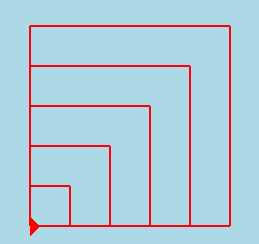
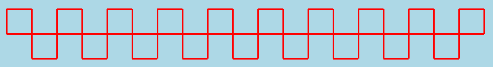
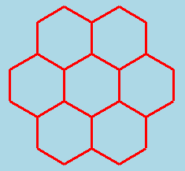
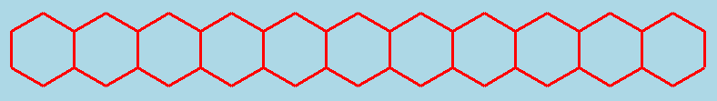
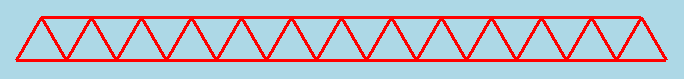
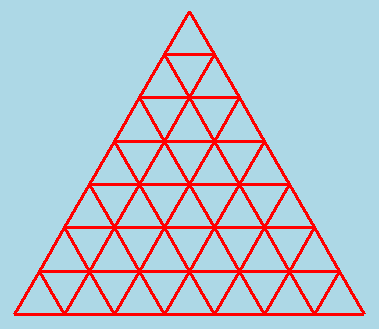
С. Задача-исследование. Напишите функцию, рисующую правильную звёздочку с заданным числом лучей.
D. Напишите функцию, расставляющую звёзды в вершинах большого правильного многоугольника. Используйте а) одну черепашку, б) несколько черепашек. Примеры:
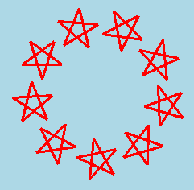
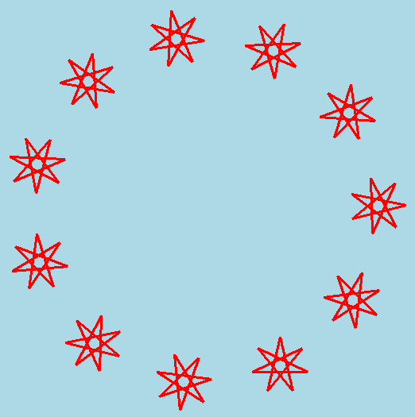
E. Напишите функцию, рисующую спираль из правильных многогранников. Рассмотрите картинки (они нарисованы с помощью одной и той же функции с разными параметрами). Какие параметры должна иметь эта функция?
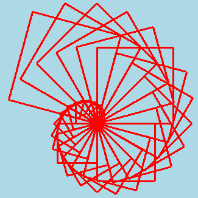
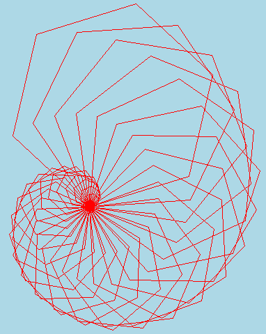
F. Напишите функцию, рисующую `ёлочку заданного размера (с двумя параметрами: размер "веточки" и число "веточек". Напишите программу, рисующую "лес". Ислользуйте модуль random, чтобы задать размеры ёлочек случайными числами в нужном диапазоне.
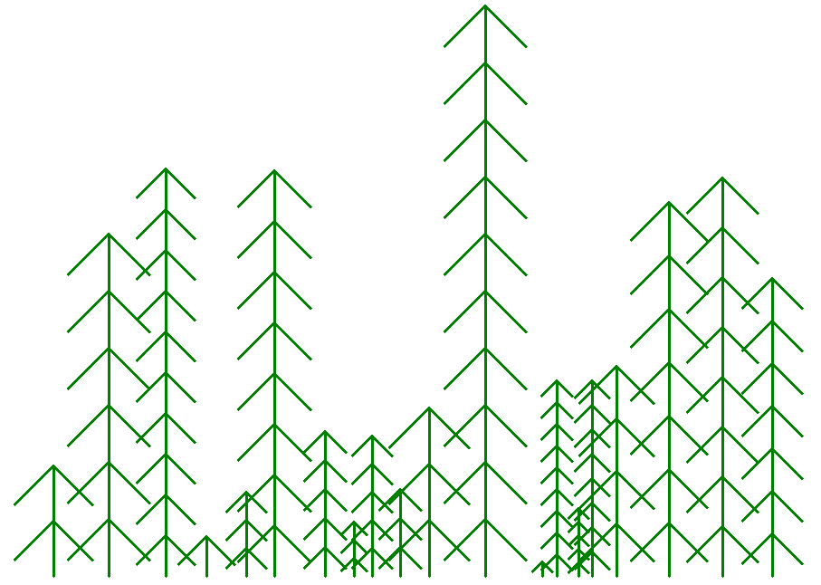
G. а) Напишите программу, которая будет рисовать одинаковые квадраты в случайном месте картинки.
б) Измените программу так, чтобы она рисовала квадраты случайного цвета.
в) Измените программу так, чтобы она рисовала квадраты слуачйного цвета и размера.
г) Напишите программу, которая рисует "ночное небо" - звёзды со случайным количеством лучей случайного цвета и размера, случайным образом разбросанные по экрану (и повёрнутые на случайный угол).